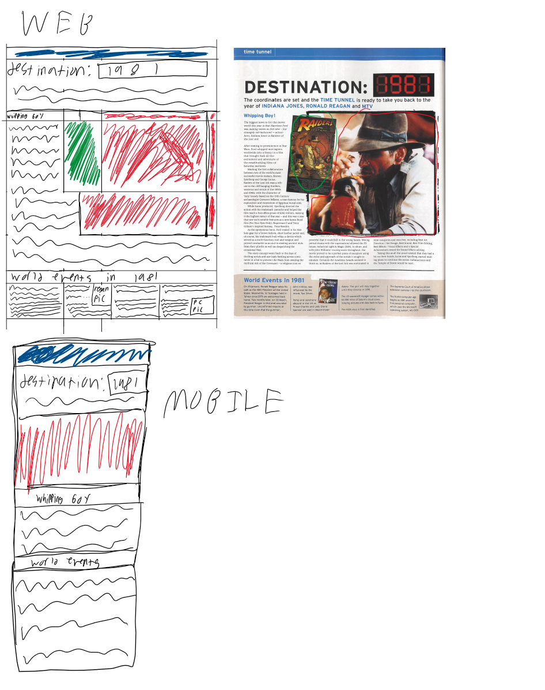

After the initial prototyping criticism, I added a sticky navbar, implemented designs that made the page feel
more like a comic book and otherwise feel better for the content, and made the page responsive to various screen
sizes.
-
Added transitions to the navbar.
-
increased text sizes and spacing, as well as adding fonts that make the page look more like comic book text.
-
rearranged the color scheme to match the images used, for a more visually satasfying page.
-
altered the layout for mobile view to avoid "word salad"